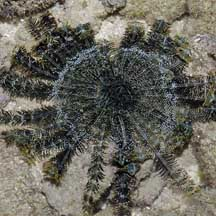
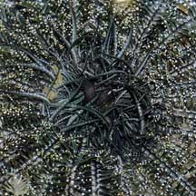
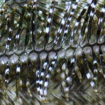
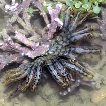
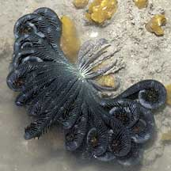
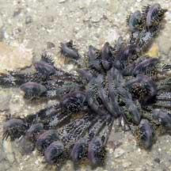
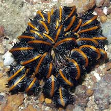
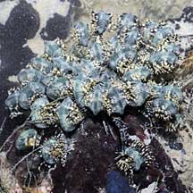
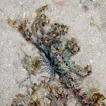

|
|
|
crinoids
text index | photo
index
|
| Phylum Echinodermata > Class Crinoidea > Order Comatulida |
| Blue
feather star awaiting identification updated Mar 2020 Where seen? This bluish feather star is sometimes seen on some of our shores. Usually on coral rubble or near living reefs. Features: 10-12cm in diameter. On the upperside, the centre is covered with many dark to black pinnules. The cirri on the underside is banded. With more than 20 arms. Arms are greenish blue, but some were seen with orange and pinkish arms. Each pinnule is often variagated. Some are black or blue with white bands, some with white or orange tips. The overall effect is generally of a bluish-black animal, sometimes with broad whitish portions and orangey tips. |
|
 Raffles Lighthouse, Aug 06 |
 Upperside |
 |
|
 Beting Bronok, Jul 07 |
 Beting Bronok, May 06 |
 Beting Bronok, Jun 03 |
|
 Beting Bronok, Jun 03 |
 Sisters Island, Aug 08 |
 Pulau Hantu, Jun 08 |
*Species are difficult to positively identify without close examination.
On this website, they are grouped by large external features for convenience of display.
| Blue feather stars on Singapore shores |
On wildsingapore
flickr
|
| Other sightings on Singapore shores |